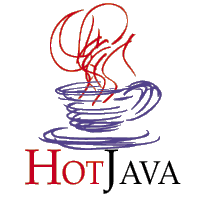

JavaHot
Origem: Em 1994, uma equipe de desenvolvedores Java começou a escrever o WebRunner, que era um clone do navegador de internet Mosaic que foi o primeiro navegador do WWW que impussionou o boom da internet. Baseou-se na linguagem de programação Java . O nome 'WebRunner' foi uma homenagem ao filme Blade Runner . A primeira manifestação pública da WebRunner foi dada por John Gage e James Gosling na Conferência de Design de Entretenimento Tecnológico em Monterey, Califórnia em 1995. Renovou o HotJava, foi anunciado oficialmente em maio do mesmo ano na conferência SunWorld. O código do analisador foi reutilizado pelas bibliotecas Java padrão.
Usabilidade: O HotJava tinha funcionalidades bastante limitadas em comparação com outros navegadores do seu tempo. Mais criticamente, o HotJava sofreu as limitações de desempenho inerentes das implementações da máquina virtual Java do dia (tanto em termos de velocidade de processamento quanto de consumo de memória) e, portanto, foi consideravelmente lento.
Funcionalidade: O HotJava (mais tarde chamado HotJava Browser para distingui-lo de HotJava Views) era um navegador web modular e extensível da Sun Microsystems implementado em Java . Foi o primeiro navegador a suportar applets Java e foi a plataforma de demonstração da Sun para a tecnologia então nova. Já foi descontinuado e já não é suportado. Além disso, o Sun Download Center foi retirado em 31 de julho de 2011 e o link de download no site oficial aponta para uma página de espaço reservado.